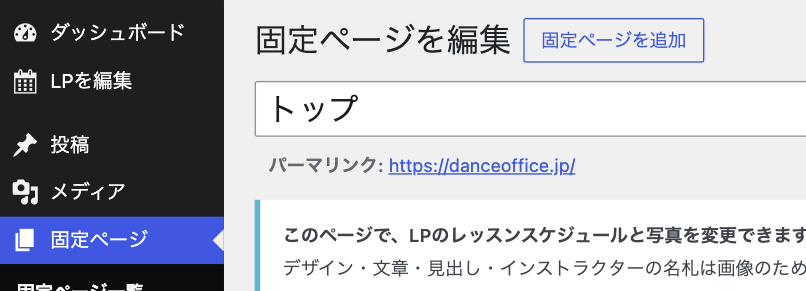
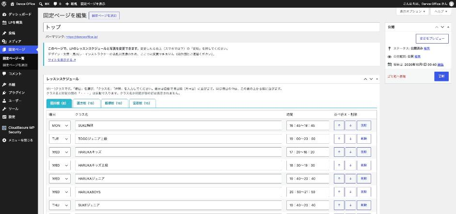
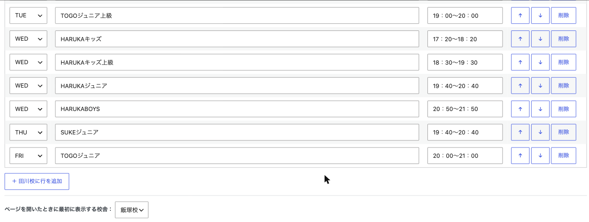
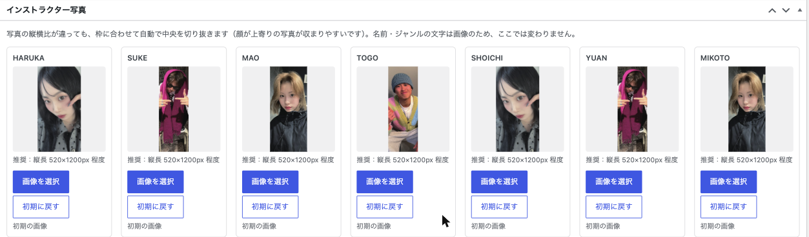
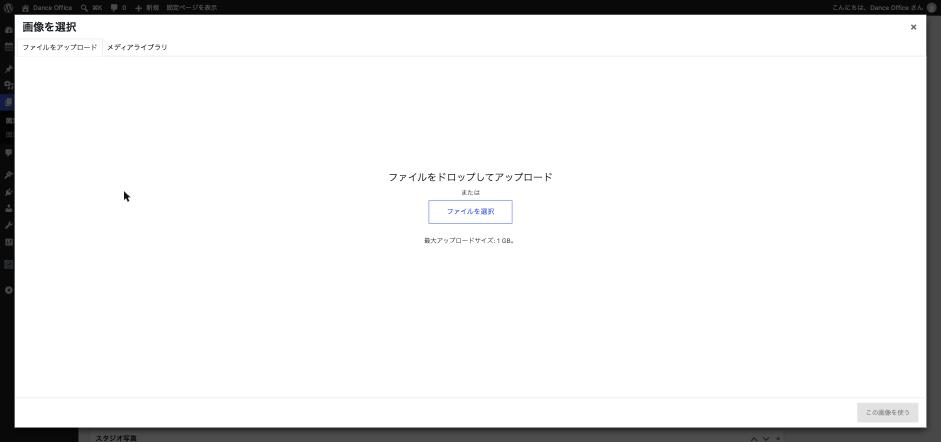
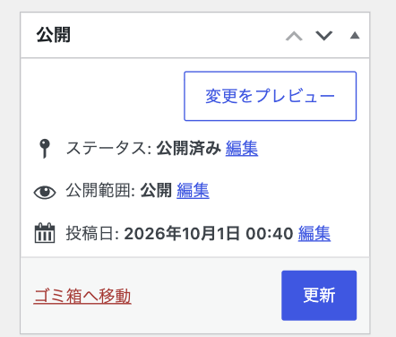

レッスンスケジュールと写真は、WordPress の管理画面「LPを編集」から変更できます。書き換えて「更新」を押すと、すぐに https://danceoffice.jp/ に反映されます。プログラムの知識は要りません。
1ログインして編集画面を開く
- パソコンかスマホのブラウザで https://danceoffice.jp/wp-admin/ を開きます。
- お渡ししたユーザー名とパスワードを入れて「ログイン」を押します。
- 左のメニューの「LPを編集」を押します（スマホでは左上の三本線を押すとメニューが出ます）。

開いた画面の上から順に「レッスンスケジュール」「インストラクター写真」「スタジオ写真」「Instagram 枠の画像」「その他の写真・動画」の欄が並んでいます。

本文を書く欄はありません。LPのデザインや文章は、ここから触っても崩れない作りになっています。
2レッスンスケジュールを変える
表の1行が、LPの1クラスです。校舎ごとにタブが分かれていて、タブの（ ）内の数字はクラスの数です。

| やりたいこと | 操作 |
|---|---|
| 校舎を選ぶ | 表の上の「田川校」「直方校」「飯塚校」「宮若校」を押す |
| クラス名・時間を変える | その行の「クラス名」「時間」の欄を書き換える |
| 曜日を変える | 左端の曜日（MON〜SUN）を選び直す |
| クラスを増やす | 表の下の「＋ ○○校に行を追加」を押す → 空の行が一番下にできるので、曜日・クラス名・時間を入れる |
| クラスを減らす | その行の「削除」を押す（確認が出たら「OK」） |
| 同じ曜日の中で順番を入れ替える | 「↑」「↓」で行を動かす |
| ページを開いたときに最初に出す校舎を変える | 表の下の「ページを開いたときに最初に表示する校舎」を選ぶ（今は飯塚校） |
覚えておくと便利なこと：
- LPでは自動で曜日順（月→日）に並びます。追加した行を表の途中に動かす必要はありません。同じ曜日の中だけ、表の上から順に並びます。
- クラス名と時間の間の「・・・」は自動で入ります。入力しないでください。
- 時間は今と同じ書き方（例：17：20〜18：20）にそろえると、見た目が揃います。
- クラス名も時間も空の行は、保存すると消えます。片方だけ空の行は黄色く表示され、保存前に確認が出ます。
- 書き換えたら、最後に「更新」を押します（→ 5）。押さずに画面を閉じると、変更は保存されません。
3写真を差し替える
写真は1枚ずつ「枠」になっていて、それぞれに「画像を選択」「初期に戻す」ボタンがあります。

- 差し替えたい枠の「画像を選択」を押します。
- 新しい写真なら「ファイルを選択」を押して、パソコンやスマホの写真を選びます（画面にドラッグしても構いません）。一度上げた写真は「メディアライブラリ」に残るので、そこから選んでも構いません。
- 写真にチェックが付いたら、右下の「この画像を使う」を押します。
- 枠の写真が変わり、「変更済み（「更新」で反映）」と出ます。最後に「更新」を押します（→ 5）。

- 元の写真に戻したいときは「初期に戻す」を押して「更新」。
- 縦横の比率が枠と違っても、自動で中央を切り抜いて表示します。インストラクターは、顔が少し上寄りの縦長の写真が収まりやすいです。
- スマホで撮った写真をそのまま上げて構いません。表示用の大きさに自動で縮小されます。
- 名前やジャンルの文字（HARUKA / HIPHOP / GIRLS など）は写真とは別の画像なので、写真を替えても変わりません。
差し替えられる枠と、おすすめの写真：
| 欄 | 枠 | おすすめの写真 |
|---|---|---|
| インストラクター写真 | HARUKA / SUKE / MAO / TOGO / SHOICHI / YUAN / MIKOTO / YUA / HANA | 縦長、520×1200px 程度 |
| インストラクター写真 | D.D（ゲスト） | 600×700px 程度 |
| スタジオ写真 | 田川校 / 直方校 / 飯塚校 / 宮若校 | 横長、812×577px |
| スタジオ写真 | スタジオ外観（READY TO DANCE? の下） | 横長、1200×830px 程度 |
| Instagram 枠の画像 | 田川校・直方校 / 飯塚校 / 宮若校 | スマホで撮った Instagram プロフィール画面のスクリーンショット |
| その他の写真・動画 | いちばん上の写真（ファーストビュー） | 縦長、1200×1470px 程度 |
| その他の写真・動画 | ABOUT の写真（左・中央・右） | 縦長 |
| その他の写真・動画 | POINT の写真（上・下） | 横長、1200×540px 程度 |
| その他の写真・動画 | 動画の再生前に出る画像 | 横長、1280×720px |
4動画を差し替える
「その他の写真・動画」欄の「紹介動画（MP4）」で「動画を選択」を押し、写真と同じ手順で選びます。
- 形式は MP4、横長（16:9）。
- 容量は 30MB以下 に圧縮してから上げてください。撮ったままの大きな動画（4K など）は、スマホで再生が始まりません。
- LPでは音なしで自動再生されます。見る人がスピーカーを押すと音が出ます。
- 再生前に出る画像も変える場合は、「動画の再生前に出る画像」に動画の最初の場面の画像を選びます。
5保存してサイトで確かめる
変更が終わったら、画面右上（スマホでは画面の下のほう）の青い「更新」を押します。スケジュールと写真は、まとめて一度に保存できます。

- 画面の上に「固定ページを更新しました。」と出たら保存完了です。
- https://danceoffice.jp/ を開いて、変わっているか確かめます。スケジュールは「LESSON」の校舎タブを押して見ます。
- 前のままに見えるときは、ページを再読み込みします（パソコン：Mac は ⌘ + Shift + R、Windows は Ctrl + F5。スマホ：ページを下に引っぱるか、アドレス欄の再読み込み）。
「変更をプレビュー」は使わなくて構いません。保存した内容しか表示されないためです。
6ここでは変えられないもの
次のものは管理画面からは変えられません。変更したいときは制作側にご連絡ください。
- インストラクターの名札（名前・ジャンルの文字）、インストラクターの人数の増減
- 見出し・ロゴ・手書き風の文字・ボタン（画像で作っています）
- ABOUT・POINT などの文章
- 各校の住所・電話番号、Instagram のリンク先、「無料体験」ボタンの行き先
- 「LESSON」の下の「※詳しいレッスン情報は各校へお問い合わせください」の一文
- 校舎の数（4校）や並び順
7困ったとき
| こんなとき | こうする |
|---|---|
| 更新したのにサイトが変わらない | 「固定ページを更新しました。」が出たか確かめ、サイトを再読み込みする（→ 5） |
| 書き間違えた・消してしまった（まだ「更新」を押していない） | そのまま画面を閉じるか、「LPを編集」を押し直す。保存前の状態に戻ります |
| 間違えたまま「更新」してしまった | 正しい内容に書き直して、もう一度「更新」。写真は「初期に戻す」でも戻せます。スケジュールを大きく消してしまったときは制作側へ |
| 写真の顔が枠から切れる | 顔が写真の上寄り～中央に来るようにトリミングしてから上げ直す |
| 動画がスマホで再生されない | 30MB以下に圧縮した MP4 を選び直す。直らなければ「初期に戻す」で元の動画に戻す |
| ログインできない・パスワードを忘れた | ログイン画面の「パスワードをお忘れですか？」から再設定するか、制作側へ |
管理画面には「投稿」「外観」「プラグイン」など他のメニューもありますが、LPの更新には使いません。表示が崩れる原因になるので触らないでください。